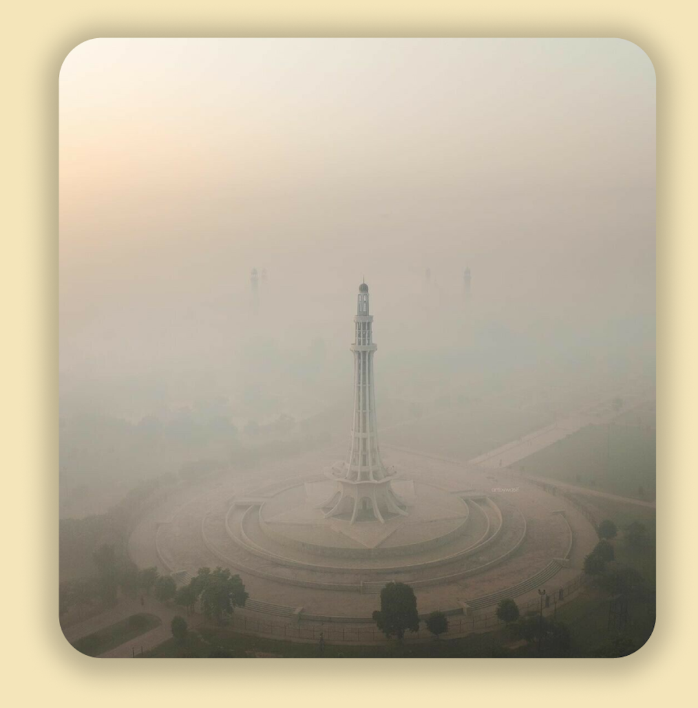

The Pakistan of Tomorrow
A Clearer Vision for Pakistan’s Future
The Pakistan of Today
Pakistan’s air pollution crisis is worse than we can fully measure.
Cities like Lahore and Karachi frequently rank among the most polluted
in the world, with skies choked by smog and citizens struggling with
respiratory diseases. Yet the full extent of this disaster remains
hidden. Traditional pollution monitoring depends on expensive,
infrastructure-heavy sensor networks, making widespread deployment
nearly impossible. Rural areas are particularly affected, where pollution
from brick kilns, uncontrolled agricultural burning, and industrial runoff
continues unchecked. Without comprehensive data, these communities are
left out of policy decisions and remain unknowingly exposed to toxic air.
Rivers face similar neglect, with flooding and changes in water flow often
going undetected until it is too late. The lack of real-time, localized
monitoring leaves Pakistan vulnerable to threats that are both visible
and invisible. How many communities are suffering in silence? How many
forests and riverbanks have been transformed without early warning?
The Pakistan of Tomorrow
A future where every breath is cleaner and every river safer is possible through innovation. Spectral analysis offers a solution. Unlike conventional sensors, spectrometers are continuous, cost-effective, and sensitive to pollutants at concentrations that ordinary detectors cannot register. A single spectrometer can cover much larger areas, making real-time monitoring accessible even in rural regions. This allows for better-informed policy decisions and ensures no community is left unprotected.
The benefits extend beyond air quality. In 2024, Pakistan experienced the highest
number of wildfires ever recorded in a single year. By tracking changes in atmospheric
composition in real time, spectral monitoring can detect wildfires and other
environmental hazards at their earliest stages, enabling faster intervention.
Combined with river and flood monitoring, EcoDocs creates a comprehensive system
that protects both air and water.
With every advancement, we move closer to a Pakistan where pollution is no longer a
mystery, where environmental threats are detected early, and where communities are
safeguarded. The Pakistan of tomorrow is not just a vision; it is a reality we are
building today.

Live
Explore Real-time Air Quality Data
Explore Real-time Trends of Airborne Pollutants for a Cleaner Future
Stay informed with our dynamic graphical representations of
pollutant levels. Updated in real-time, these insights empower
you to understand air quality trends and their implications for
health and the environment.
Live Pollutant Levels: Stay Informed About Air Quality in Real-Time
Explore our comprehensive data tables showcasing real-time
concentrations of various pollutants. Filter by location and
pollutant type to gain insights into air quality in your area.
Monitoring
Understanding Real-time Pollution Detection Techniques
Our advanced spectrometry techniques enable the continuous
monitoring of airborne pollutants. By analysing light spectra, we
can accurately identify and quantify harmful particles in
real-time.
Data Collection and Processing Explained
Data is collected through spectrometers, that relay continuous
data, which is processed and then presented in an accessible
format
Displaying Real-time Data to Users
Processed data is visualised through interactive platforms for
easy access.
Innovative Techniques for Accurate Measurements
Our methods ensure precise detection of PM2.5 levels
as well as other pollutants.